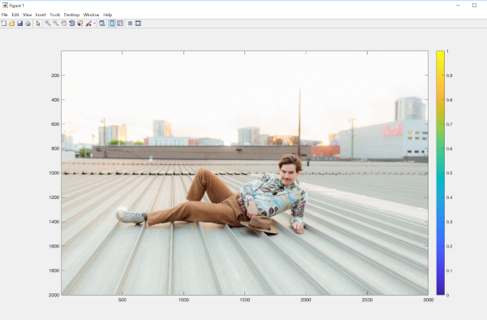
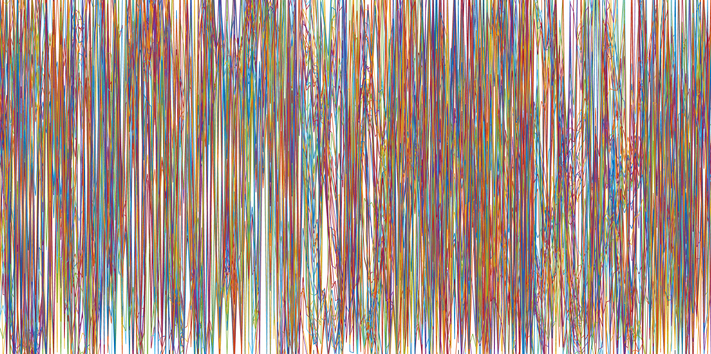
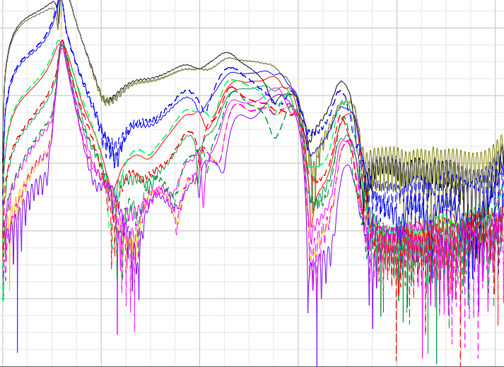
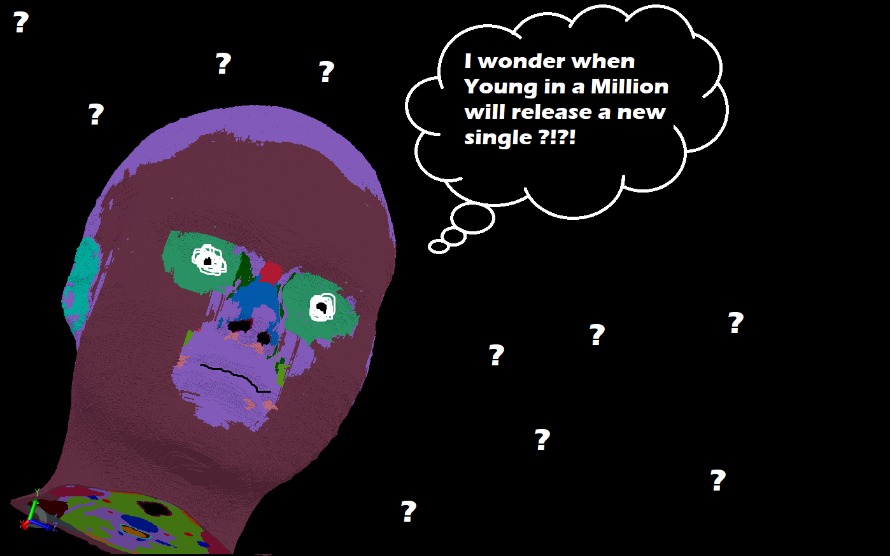
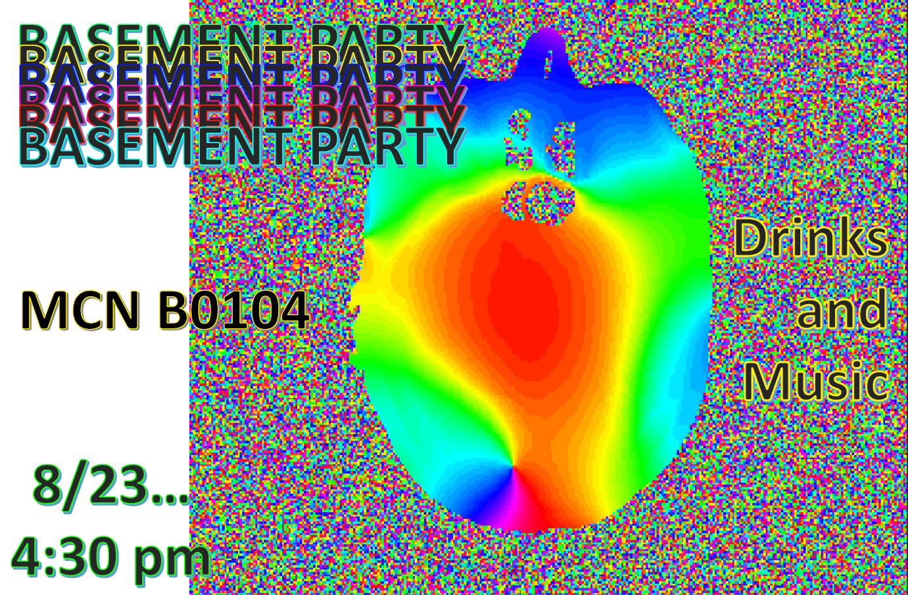
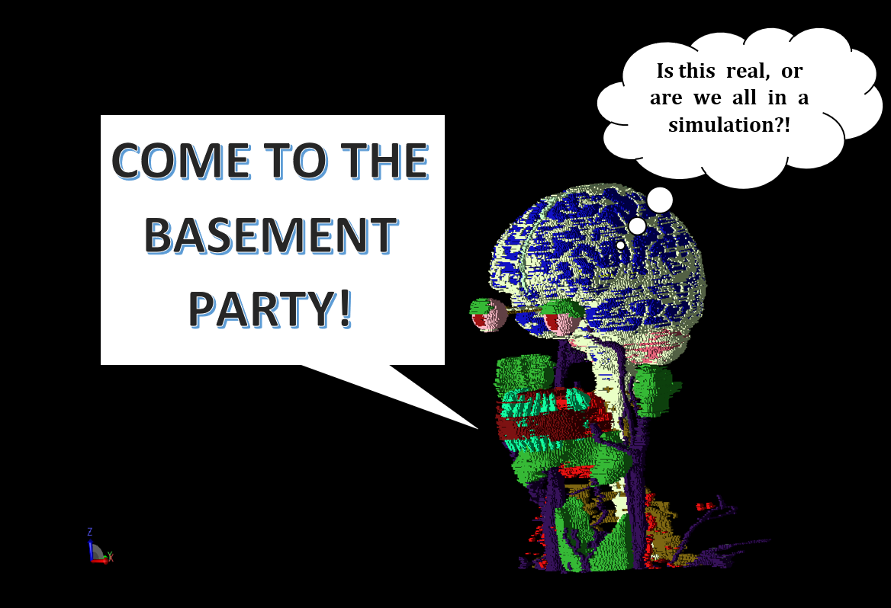
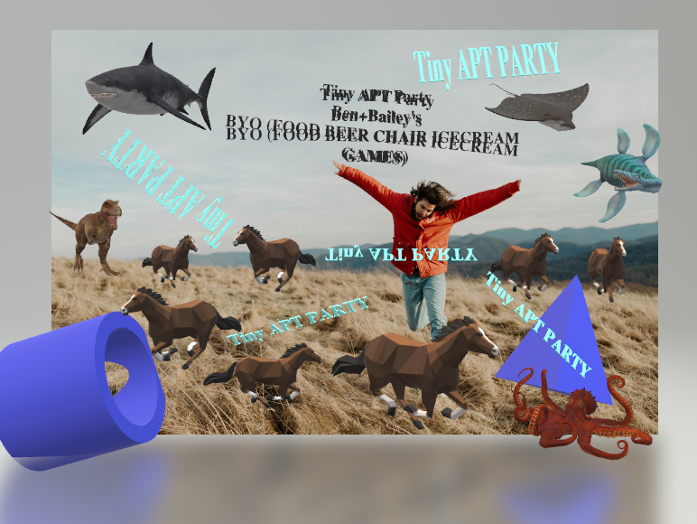
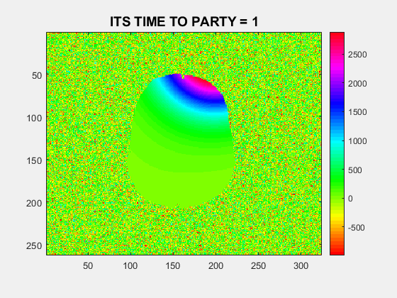
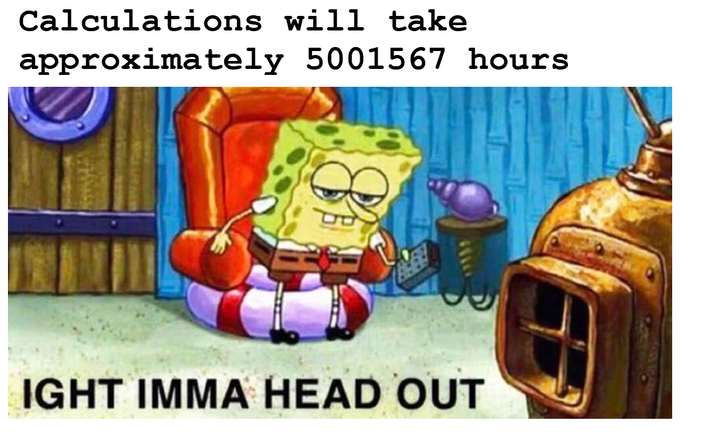

As a scientist you make mistakes, whether the mistake is wasting time or just plotting something weird,
some of these mistakes turn into Art, here is a collection of strange plots i've mistakenly produced.
Best Figure submission

Random Basement Party

Wrong Index

almost Random phase

Drippy Newtork Anazyser

Wondering about that new single

Official party flyer

Frank's invitation

Random Apt Party

Random Basement Party unabridged

time meme
